Esplora i nostri diversi tipi di miele, ognuno con un sapore unico e proprietà benefiche.
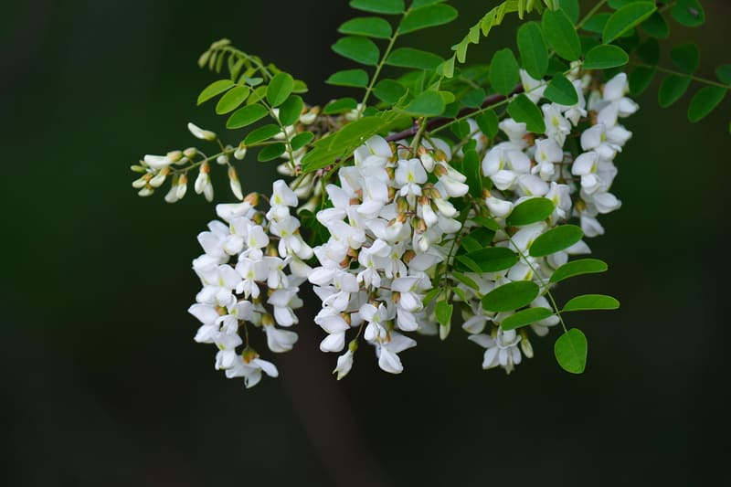
Dolce e delicato, perfetto per tè e tisane. Ricco di proprietà calmanti.
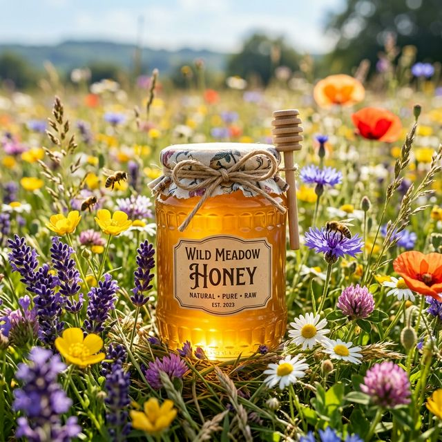
Aroma variegato, rappresenta l'essenza dei fiori locali. Ottimo energizzante naturale.
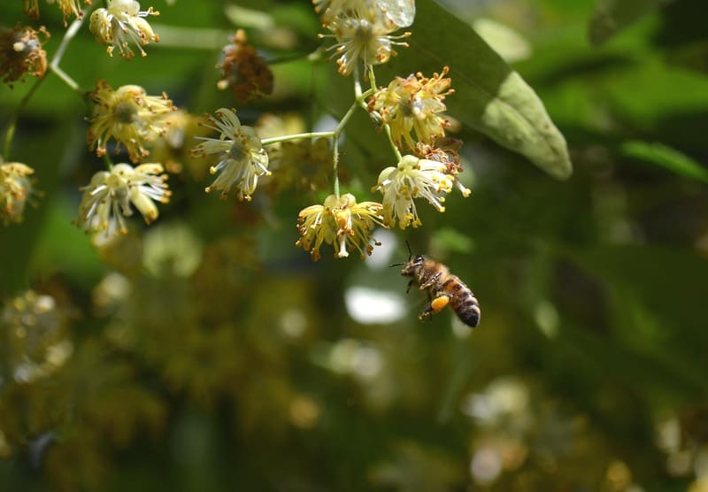
Rinfrescante e leggermente balsamico, ideale per calmare e rilassare.
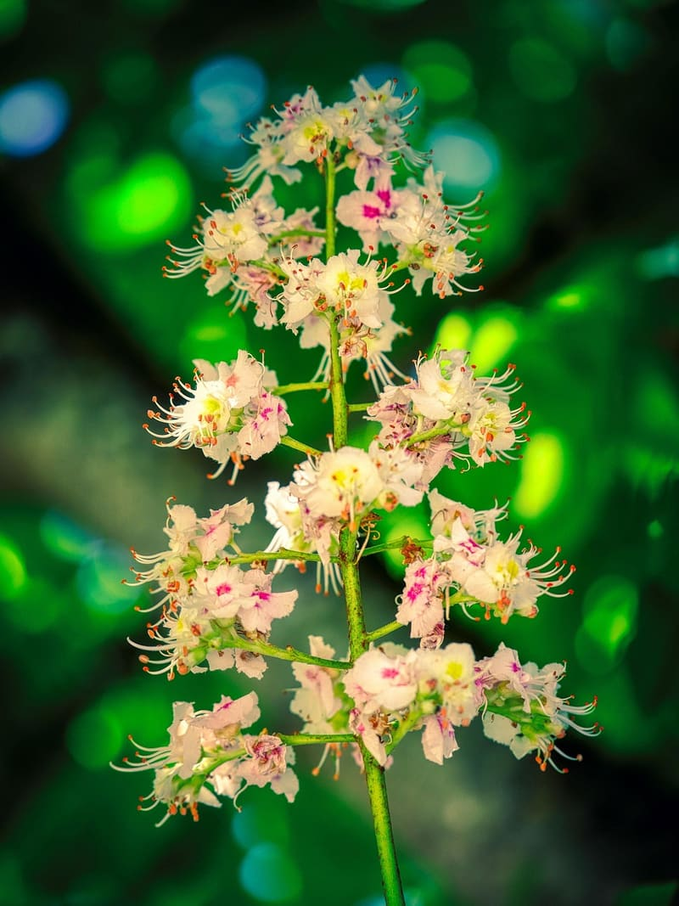
Intenso e aromatico, con un retrogusto leggermente amaro. Perfetto per abbinamenti salati.
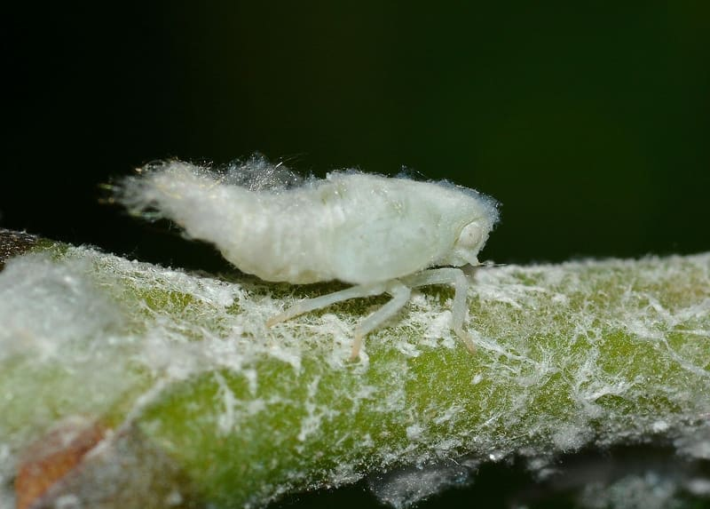
Denso e scuro, ricco di minerali. Ideale per rafforzare le difese immunitarie.
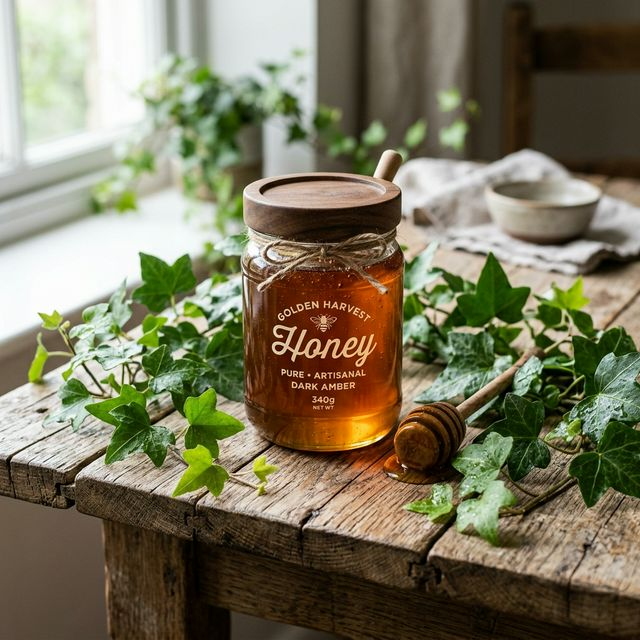
Raro e pregiato, dal sapore intenso e leggermente acidulo. Usato per il benessere respiratorio.
Leggero e dolce, dal gusto delicato. Ottimo per dolcificare senza alterare i sapori.
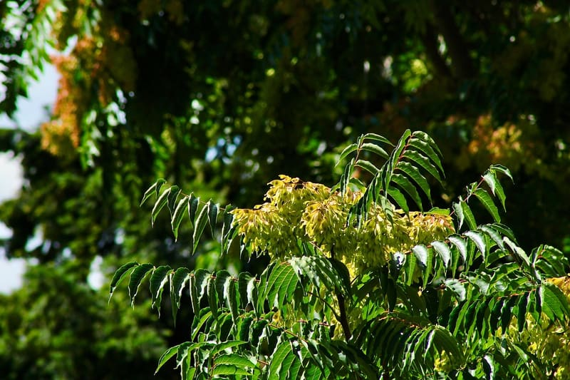
Esotico e profumato, con un sapore fruttato e tropicale. Perfetto per sperimentare nuovi abbinamenti.
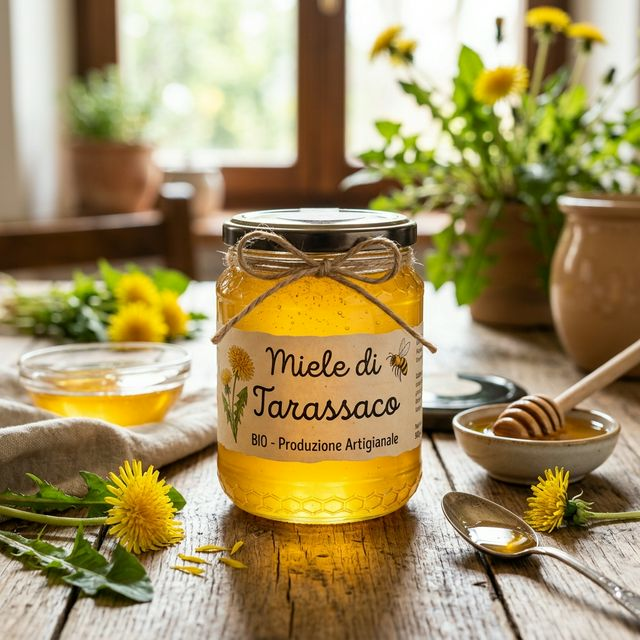
Dal sapore pungente e inconfondibile, straordinario diuretico.
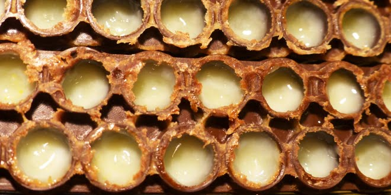
Il potente elisir della regina per l'energia e la memoria di tutta la famiglia.
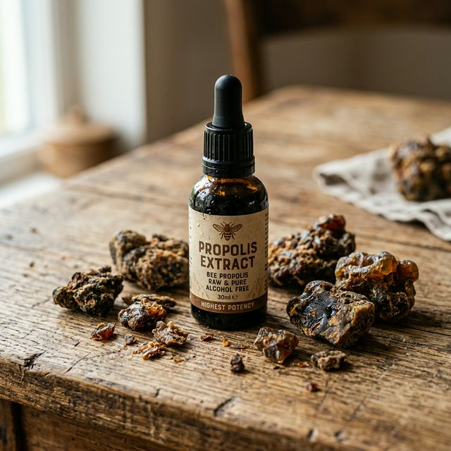
L'insuperabile e potente disinfettante selvatico delle api per mal di gola e afte.
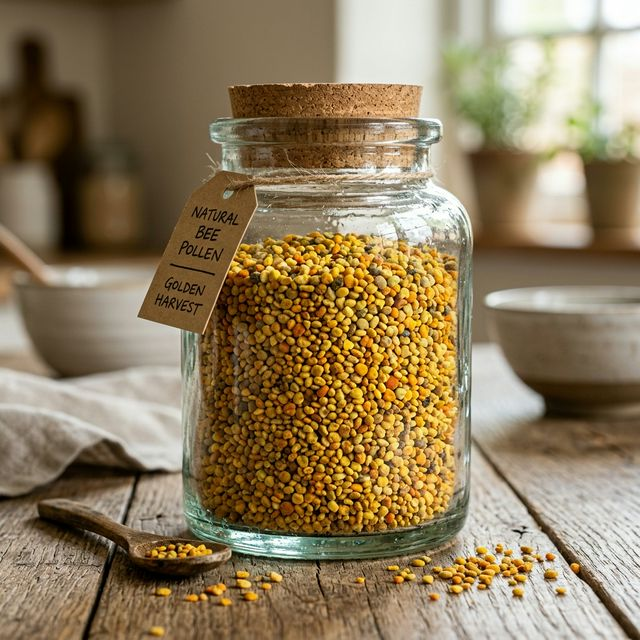
Misteriose palline ricolme di pura eccezionale proteina e vitamine dal campo fiorito.
Tutta l'aura aurea e la depurazione sana e biologica della fiamma in un favoloso profumo.
Per qualsiasi dolce curiosità